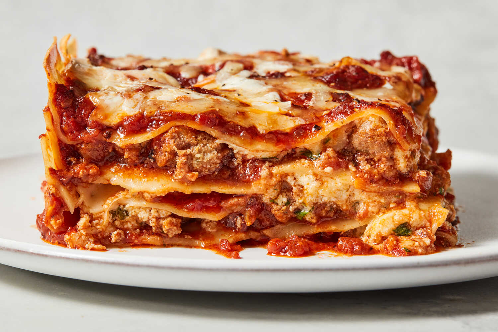

Home
Lasagna

Lasagna is a classic Italian dish that layers rich flavors and hearty ingredients to create a satisfying meal. To make a traditional lasagna, start by preparing a savory meat sauce with ground beef or Italian sausage, sautéed onions, garlic, and a robust tomato sauce seasoned with oregano, basil, and a hint of red pepper flakes. Simultaneously, prepare a creamy cheese mixture by combining ricotta, mozzarella, and Parmesan cheese with an egg and a sprinkle of parsley for added flavor. Layer the lasagna noodles—either pre-cooked or oven-ready—with alternating layers of meat sauce and cheese mixture in a baking dish, finishing with a generous topping of mozzarella. Bake the lasagna at 375°F (190°C) for about 45 minutes, covering it with foil for the first half of the baking time to prevent excessive browning. Once golden and bubbling, let the lasagna rest for a few minutes before serving to allow the layers to set. Perfect for family dinners or special gatherings, this dish is both comforting and indulgent.
ingredients
- 1 pound (450 g) ground beef or Italian sausage
- 1 medium onion, finely chopped
- 3 garlic cloves, minced
- 1 can (28 oz/800 g) crushed tomatoes
- 2 tablespoons tomato paste
- 1 teaspoon dried basil
- 1 teaspoon dried oregano
- 1/2 teaspoon red pepper flakes (optional)
- Salt and pepper to taste
steps
- Prepare the Meat Sauce: Sauté chopped onions and minced garlic in a large skillet until fragrant. Add ground beef or Italian sausage, cook until browned, then stir in crushed tomatoes, tomato paste, and seasonings (basil, oregano, red pepper flakes). Simmer for 20 minutes.
- Mix the Cheese Filling: In a bowl, combine ricotta, shredded mozzarella, grated Parmesan, an egg, and parsley. Stir until smooth and creamy.
- Cook the Lasagna Noodles (if needed): Boil the noodles according to the package instructions until al dente. Drain and lay them flat on a clean surface to prevent sticking.
- Assemble the Lasagna: In a greased baking dish, spread a thin layer of meat sauce. Add a layer of noodles, followed by the cheese mixture, then meat sauce. Repeat the layers, finishing with a generous topping of mozzarella.
- Bake and Serve: Cover with foil and bake at 375°F (190°C) for 25 minutes. Remove the foil and bake for an additional 15-20 minutes until golden and bubbling. Let rest for 10 minutes before slicing and serving.